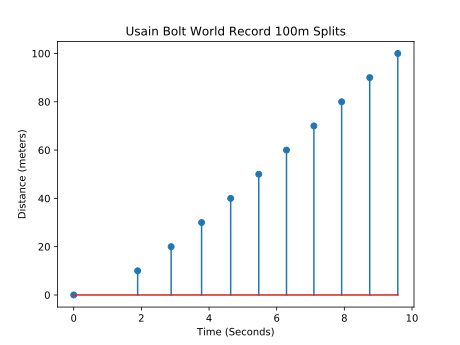
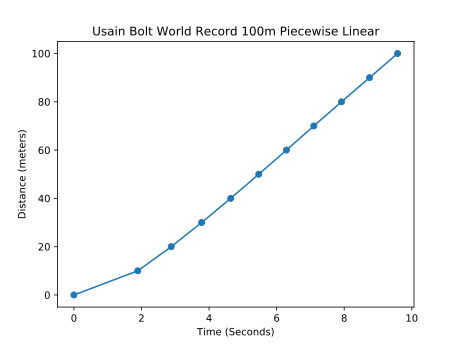
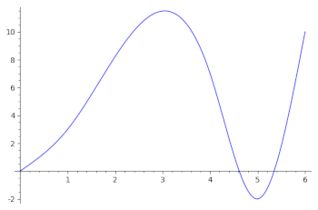
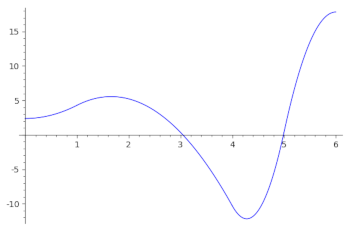
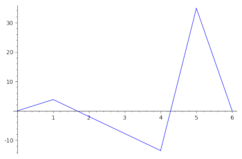

Lab 2: Limits And Derivatives: Part 2
(Click here for the Sage version)
(Click here for part 1)
By Christopher J. Tralie
Problem 4: Usain Bolt's Peak Speed (10 pts)
Usain Bolt currently holds the world record in the 100 meter race. Below is some data of the times at which Usain Bolt passed each multiple of 10 meters when he set that record in 2009 (courtesy of Dr. Andrew French)
| 0 meters | 10 meters | 20 meters | 30 meters | 40 meters | 50 meters | 60 meters | 70 meters | 80 meters | 90 meters | 100 meters |
| 0 seconds | 1.89 seconds | 2.88 seconds | 3.78 seconds | 4.64 seconds | 5.47 seconds | 6.29 seconds | 7.10 seconds | 7.92 seconds | 8.75 seconds | 9.58 seconds |
One interesting question one could ask is what is the peak speed Usain bolt reached during his run? We know that his average speed is 100m/9.58 seconds ~= 10.44 meters/second (about 23 miles per hour!). However, he had to start from a speed of zero and work his way up, so his peak speed is certainly above this.
To determine his peak speed, we would need to compute a derivative, which requires a differentiable function, but we only have a table of numbers at different intervals. This isn't even continuous, let alone differentiable! (See below)
To get around this, we should fit a function to the data we have. Simply connecting each dot with a line segment (also known as a piecewise linear function) won't quite do the trick, though, because the left and right hand derivatives at the recorded times won't necessarily agree, as shown below

A better choice is something known as a cubic spline, which is a piecewise cubic polynomial whose first and second derivatives agree at the endpoints. This means that we can meaningfully talk about the velocity and the acceleration at all points in the interval from 0 seconds to 9.58 seconds using a cubic spline. Maple has a built in function to construct cubic splines in the CurveFitting library. Click here to see documentation of that function.
As an example of building a spline, consider the following code
with(CurveFitting)
xs := [0, 1, 4, 5, 6]
ys := [0, 3, 7, -2, 10]
f(x) := Spline(xs, ys, x)
You can then plot the spline, and also compute and plot the derivatives using the provided functions up top, as shown below. You should demonstrate in your notebook that you can reproduce these plots
plot(f(x), x=0..6) |
plot(diff(f(x), x), x=0..6) |
plot(diff(f(x), x$2), x=0..6) |
|  |  |  |
To see what the polynomials actually are, you can simply type Spline(xs, ys, x) in a cell by itself and then click run. You should roughly get the following on the above example (note that each piece comes with a cubic polynomial and the two numbers that determine the interval over which that polynomial is defined):
\[ \left\{ \begin{array}{c} 0.638x^3 + 2.36x & 0 \leq x < 1 \\ -0.965(x - 1)^3 + 1.92(x - 1)^2 + 4.28x - 1.28 & 1 \leq x < 4 \\ 8.07(x - 4)^3 - 6.77(x - 4)^2 - 10.299x + 48.195 & x \leq 4 < 5 \\ -5.81(x - 5)^3 + 17.443(x - 5)^2 + 0.371x - 3.855 & 5 \leq x < 6\end{array} \right\} \]
Now, you should be prepared to answer the following questions:
Questions
- Describe the velocity and acceleration plots for Usain Bolt's run over time, using cubic splines to interpolate the data of his splits. That is, show both the velocity and acceleration plots in your solution, and talk about their overall features.
- Do you see anything surprising in the velocity/acceleration plots, given that this was the world record? Where might a track coach be upset with Usain Bolt (i.e. where is there room for improvement, and why do you think this happened)?
- What is the peak velocity that Usain Bolt reached over his run, in meters/second? Hint: You should narrow this down to one interval by looking at the velocity/acceleration plots. Then, since the derivative of a cubic is a parabola ax2 + bx + c, you can find the maximum as -b/2a (use Maple to help with evaluating this function as much as possible, rather than doing it by hand).
Problem 5: Implicit Differentiation of the Tschirnhausen Cubic (5 pts)
There's a fancy-sounding relation known as the Tschirnhausen Cubic, which makes a shape that looks like a ribbon. One incarnation is as follows
\[ x^3 = 9(x^2 - 3y^2) \]
Question: Given a point (a, b) on the curve, come up with an expression for a line (with x as the independent variable) that is tangent to the curve at that point. Please attach your work to your writeup.
Question: Given a parameter t, it is possible to find an a and b on the curve so that \[ a = 3(3-t^2) \] and \[ b = t(3 - t^2) \]. Show visually that the line is tangent to the curve using the implicitplot command, for several different choices of t.
Hint: Have a look at the examples from class (they are in Sage, but they should still help)